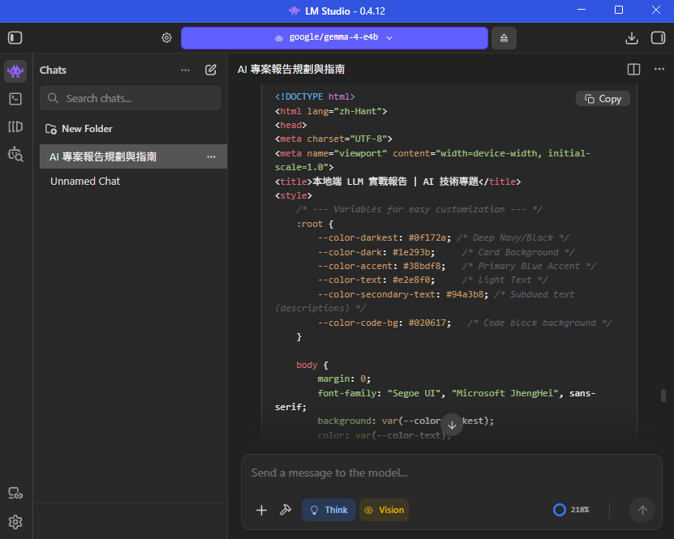

使用 LM Studio 與 Gemma 模型打造個人 AI 系統
羅永成｜3B3C7003
本專題主要探討本地端大型語言模型（Local LLM）的應用， 並透過 LM Studio 搭配 Gemma 模型進行實作。
與傳統雲端 AI 不同，本地端 AI 能在使用者電腦上直接運行， 不僅提升資料隱私，也能在無網路環境下持續使用。 本專題透過實際操作，了解本地端 AI 的架設流程與應用潛力。
使用工具： LM Studio
使用模型： Gemma 4
以下為 LM Studio 執行畫面：

本次專題讓我實際體驗本地端 AI 的運作方式。 雖然效能略低於雲端服務，但在隱私與成本方面具有優勢。
未來隨著硬體效能提升，本地端 AI 將在個人應用與開發領域中 扮演越來越重要的角色。